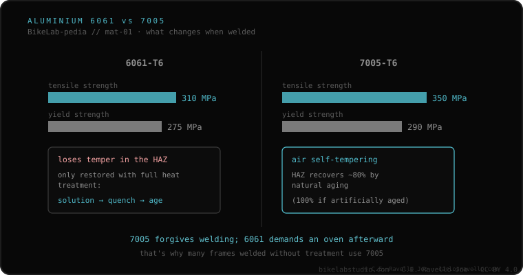

Aluminum frames are almost always made of one of two alloys, and they behave differently when welded. 6061-T6 gets its hardness from a factory heat treatment; welding it erases that temper in the band around the bead, and restoring it requires treating the whole frame in an oven. 7005-T6 is air self-quenching: its heat-affected zone recovers on its own, over time, up to ~80% of its strength (100% if artificially aged). That's why the useful question isn't "can it be welded?" but "which alloy is it?".
If your frame is aluminum, this is the fact that changes the most decisions and the one almost nobody explains to you at the store.
6061 (Al-Mg-Si family) reaches its strength through a heat treatment called T6: solution treatment, quench and aging. The welding heat undoes that treatment right in the heat-affected zone (the HAZ), which is left soft. Restoring it isn't "running the torch over it again": you have to heat-treat the whole frame in an oven all over again. If that step isn't done, that band stays weak, and it's the documented reason so many "cheap" aluminum repairs fail again —and almost always right next to the new bead, not where the original crack was.
7005 (Al-Zn family) plays differently: it's air self-quenching. After welding, its HAZ recovers naturally, over time, up to about 80% of the base metal's strength, and can reach 100% if artificially aged. That's why many manufacturers that weld in series prefer 7005: it forgives the weld without forcing the oven.

This fact fits the whole welding process: it defines the filler metal that suits it, what happens in the heat-affected zone, and whether post-weld heat treatment is needed —one of the key questions to ask the welder. The MPa gap between the two, it's worth saying, is rarely what decides a frame's real behavior in use: everyday loads stay well below those limits. What truly changes for whoever is going to weld is the process.
If you're unsure about the alloy or the state of a crack, send us the case. Real diagnosis, no upselling. Message us on WhatsApp
Physically yes, with TIG. What changes by alloy is what happens afterward: 6061 loses its temper in the HAZ and needs an oven to recover it; 7005 recovers much of its hardness on its own, in air, over time.
It's usually stated on the manufacturer's sticker, the manual or the model's website. If it isn't there, it's the first question worth asking at the shop, because it determines the whole process.
6061 gets its hardness from a heat treatment (T6) that the heat destroys locally; restoring it requires solution-treating, quenching and aging the whole frame. 7005 is self-quenching: its HAZ recovers in air up to ~80% over time.